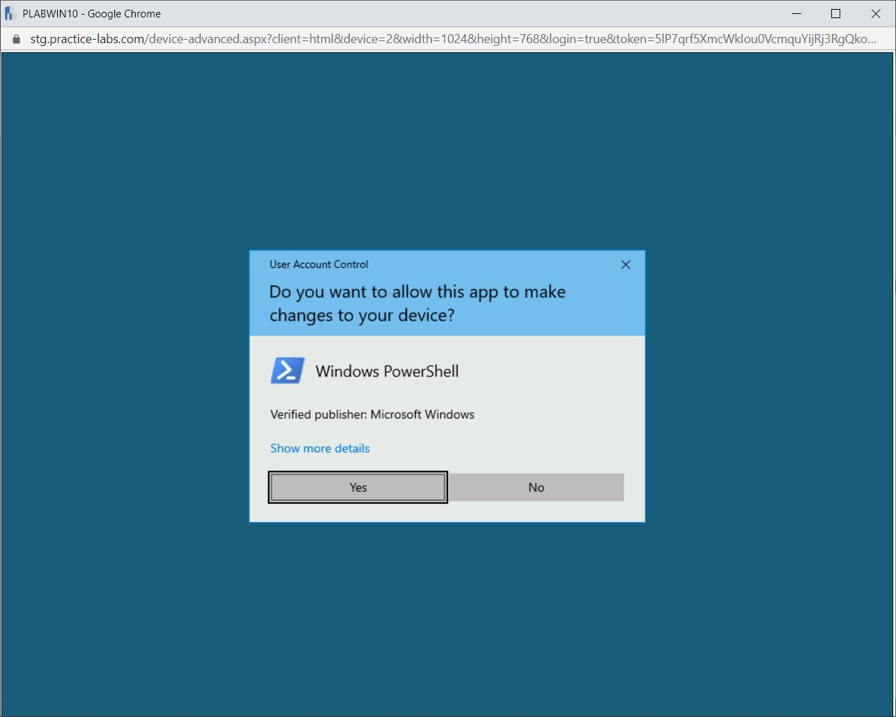
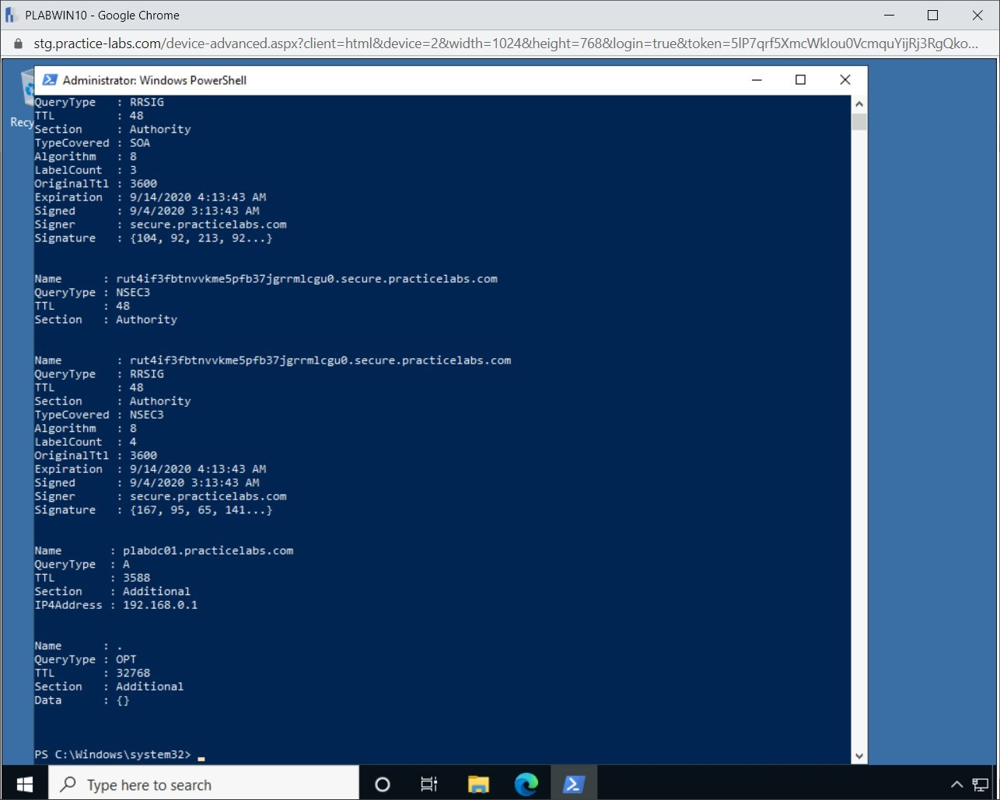
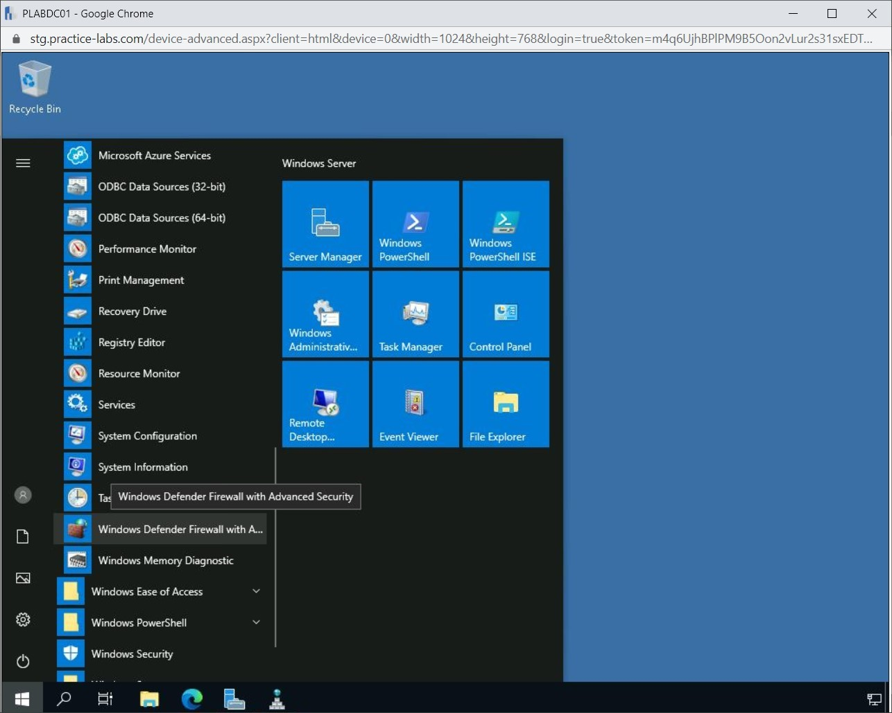
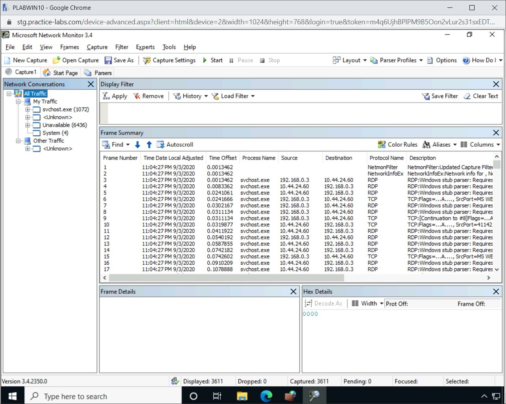

Introduction
9beca326-b493-4b0e-b3dc-d7dfb77df3c9
Welcome to the Implementation of Secure Protocols Practice Lab. In this module, you will be provided with the instructions and devices needed to develop your hands-on skills.
dc640c20-9434-45ea-b7c2-6d4d6a196bfc
Learning Outcomes
In this module, you will complete the following exercises:
- Exercise 1 - Working with Domain Name System Security Extensions (DNSSEc)
- Exercise 2 - Configuring IPSec
- Exercise 3 - Knowing the Security Protocols
After completing this module, you should be able to:
- Create a Zone, Sample Resource Records and a Non-Authoritative DNS Server
- Sign the Zone Using Default Settings
- Distribute the TA to a Non-Authoritative DNS Server
- Verify DNSKEY Trust Anchors
- Query a Signed Zone without DNSSEC Validation Required
- Configure Support for DNSSEC in GPO
- Query a Signed Zone with DNSSEC Validation Required
- Create Connection Security Rule on PLABWIN10 and on PLABDC01
- Verify the Security Association
- Run Network Monitor to Observe Traffic Pattern
- Find Network Conversation Signed With ESP
- Disable the Connection Security Rules on PLABWIN10 and PLABDC01
- Run Network Monitor to Collect New Data
After Completing this module, you should have further knowledge of:
- Secure/multipurpose Internet Mail Exchanger (S/MIME)
- Secure Real-Time Protocol (SRTP)
- Lightweight Directory Access Protocol (LDAP) over SSL (LDAPS)
- File Transfer Protocol, Secure (FTPS) and Secure File Transfer Protocol (SFTP)
- Simple Network Management Protocol, Version 3 (SNMPv3)
- Hypertext Transfer Protocol Over SSL/TLS (HTTPS)
- Secure Post Office Protocol (POP)/ Internet Message Access Protocol (IMAP)
- Use Cases
Exam Objectives
The following exam objectives are covered in this lab:
Note: Our main
focus is to cover the practical, hands-on aspects of the exam
objectives. We recommend referring to course material or a search engine
to research theoretical topics in more detail.
Lab Duration
It will take approximately 1 hour to complete this lab.
c6fa62a3-1a00-4052-8104-258e8cbaa187
Help and Support
For more information on using Practice Labs, please see our Help and Support page. You can also raise a technical support ticket from this page.
Click Next to view the Lab topology used in this module.
d2c53300-f951-45a9-9aa4-3d4ecae69e11
Lab Topology
During your session, you will have access to the following lab configuration.

Depending on the exercises, you may or may not use all
of the devices, but they are shown here in the layout to get an overall
understanding of the topology of the lab.
- PLABDC01 - (Windows Server 2019 - Domain Controller)
- PLABDM01 - (Windows Server 2019 - Domain Member)
- PLABWIN10 - (Windows 10 - Domain Member Workstation)
- PLABKALI - (Kali Linux 2019.4 - Standalone Server)
Click Next to proceed to the first exercise.
<
Home |
README >
CompTIA Security+ Practice Labs
Exercise 1 - Working with Domain Name System Security Extensions (DNSSEc)
Domain Name System (DNS) is the backbone of the
Internet. Every Email that is sent from one client to another client or
every Website that is browsed, requires DNS. In the early 1980s, DNS was
invented to support the Internet, which was in its initial stages. With
the growth of the Internet, DNS started to play a critical role. For
example, you visit a Website by simply entering its URL. If DNS was not
there, you would have to remember the IP address of the domain. Think
about trying to remember thousands of IP addresses. Humanly, it would
not be possible to remember so many IP addresses. DNS made it simple by
remembering the URLs, which are translated to the IP addresses by the
DNS.
However, with the great use of DNS, comes its
weaknesses. One of the key weakness is that the DNS responses can be
spoofed. An attacker can send a spoofed response against the query that
was sent by the DNS client. The spoofed response would appear as it has
come from the DNS server.
With the use of spoofed response, the attacker can
also manage to poison the DNS cache at the client end. After the DNS
cache is poisoned, the attacker can then use its own DNS data as the
responses to the queries sent by the client.
DNSSEC or Domain Name System Security Extensions
ensures that the DNS information has not been altered during
transmission. So, the spoofing problem is taken care by DNSSec. The
original DNS protocol did not have the origin authentication and
integrity protection, which are now being offered by DNSSec.
In this exercise, you will configure and test DNSSEC
on Windows Server 2019 by creating a new zone, adding Resource Records,
and installing a non-authoritative DNS server.
Learning Outcomes
After completing this exercise, you should be able to:
- Create a Zone, Sample Resource Records and a Non-Authoritative DNS Server
- Sign the Zone Using Default Settings
- Distribute the TA to a Non-Authoritative DNS Server
- Verify DNSKEY Trust Anchors
- Query a Signed Zone without DNSSEC Validation Required
- Configure Support for DNSSEC in GPO
- Query a Signed Zone with DNSSEC Validation Required
Your Devices
You will be using the following devices in this lab. Please power these on now.
- PLABDC01 (Windows Server 2019 - Domain Controller)
- PLABDM01 (Windows Server 2019 - Domain Member Server)
- PLABWIN10 (Windows 10 - Domain Member Workstation)
Task 1 - Create a Zone
A DNS zone is an administrative section in the DNS
namespace, which is a hierarchical tree structure. The root domain is
always at the start of the DNS namespace and then you can have several
zones. Each zone gives you an administrative control for a specific
domain, which means that a zone always starts with a domain and can have
several sub-domains. You, as the owner of the zone, can manage the
domains and sub-domains.
The information about a zone is contained in a text
file, which contains the records for the DNS zone. A zone can be created
as a Forward Lookup Zone or Reverse Lookup Zone. A Forward Lookup Zone
contains the host name to IP address mapping. A Reverse Lookup Zone
contains the IP address to host name mapping in a particular zone.
You can create primary, secondary, and stub zones.
You can use a Primary zone, which is the writeable zone in DNS, to test
zone signing using DNSSEC. To keep the current configuration on the
servers safe, you will create a new zone for testing purposes.
In this task, you will create the secure.practicelabs.com zone on the PLABDC01 server.
Step 1
Ensure you have powered on the required devices and connect to the PLABDC01 server.
The Server Manager window is displayed by default. Click on the Tools menu and select DNS.
Figure 1.1 Screenshot of PLABDC01: Clicking the Tools menu and then selecting DNS in the Server Manager window.
Step 2
In the DNS Manager window, expand PLABDC01 > Forward Lookup Zone.
Click and right-click Forward Lookup Zone and select New Zone.
Figure 1.2 Screenshot of PLABDC01: Right-clicking the Forward Lookup Zones and selecting New Zone in the context menu.
Step 3
In the New Zone Wizard, the Welcome to the New Zone Wizard page is displayed.
Read the introductory information and click Next.
Figure 1.3 Screenshot of PLABDC01: Clicking Next on the Welcome to the New Zone Wizard in the New Zone Wizard.
Step 4
On the Zone Type page, verify that the Primary zone option and the Store the zone in Active Directory checkboxes are selected.
Click Next.
Figure
1.4 Screenshot of PLABDC01: Verifying that the Primary zone option and
the Store the zone in Active Directory checkboxes are selected and then
clicking on the Next button on the Zone Type page.
Step 5
On the Active Directory Zone Replication Scope page, the To all DNS servers running on domain controllers in this domain: PRACTICELABS.COM option is selected by default.
Leave this selected and click Next.
Figure
1.5 Screenshot of PLABDC01: Keeping the default selection on Active
Directory Zone Replication Scope page and clicking the Next button.
Step 6
On the New Zone Wizard page, type the following:
secure.practicelabs.com
Click Next.
Figure
1.6 Screenshot of PLABDC01: Entering the name for the new zone in the
Zone name text box and clicking Next on the Zone Name page.
Step 7
On the Dynamic Update page, keep the default selection to Allow only secure dynamic updates.
Click Next.
Figure
1.7 Screenshot of PLABDC01: Keeping the default selection to Allow only
secure dynamic updates option and clicking Next on the Dynamic Update
page.
Step 8
On the Completing the New Zone Wizard page, review the summary about the newly-created zone.
Click Finish.
Figure 1.8 Screenshot of PLABDC01: Clicking Finish on the Completing the New Zone Wizard page.
Step 9
Notice that a new zone with the name secure.practicelabs.com is now created.
Figure 1.9 Screenshot of PLABDC01: Showing the newly created secure.practicelabs.com zone in the DNS Manager window.
Keep the DNS Manager window open.
Task 2 - Create Sample Resource Records
Before you create any resource records, you need to
first create a zone, which you did in the previous task. You had created
secure.practicelabs.com zone. This is the zone that you will use to
create the resource records.
In this task, you will create sample records, like Host (A), that will be used later for testing name resolution with DNSSEC.
Step 1
Connect to the PLABDC01 server and ensure that the DNS Manager window is open.
In the left pane, select the secure.practicelabs.com zone, then right-click and select New Host (A or AAAA).
Figure 1.10 Screenshot of PLABDC01: Right-clicking the zone and selecting New Host (A or AAAA) from the context menu.
Step 2
In the New Host window, in the Name (uses parent domain if blank) text field, type the following:
www
In the IP address text field, type the following:
192.168.0.1
Click Add Host.
 Figure
1.11 Screenshot of PLABDC01: Entering the details for the resource
record in the New Host dialog box and clicking Add Host.
Figure
1.11 Screenshot of PLABDC01: Entering the details for the resource
record in the New Host dialog box and clicking Add Host.
Step 3
Click OK on the DNS dialog box, indicating the Host record was successfully created.
Figure
1.12 Screenshot of PLABDC01: Clicking OK on the DNS dialog box that
displays the confirmation of creation of resource record.
Step 4
Back in the New Host window, in the Name (uses parent domain name if blank) text field, type the following:
www2
In the IP address text box, type:
192.168.0.2
Click Add Host.
Figure
1.13 Screenshot of PLABDC01: Entering the details for the resource
record in the New Host dialog box and clicking Add Host.
Step 5
As before, click OK in the DNS dialog box confirming the successful creation of the Host record.
Figure
1.14 Screenshot of PLABDC01: Clicking OK on the DNS dialog box that
displays the confirmation of creation of resource record.
Step 6
Click Done to close the New Host window. You should now have two new records added in the DNS Manager window.
Figure 1.15 Screenshot of PLABDC01: Clicking Done on the New Host dialog box.
Keep the DNS Manager window open.
Task 3 - Create a Non-Authoritative DNS Server
In this task, you will install and configure a new non-authoritative DNS server on the PLABDM01 device.
This server will not be used for resolving names in the lab network as
it will not host any writable DNS zone. It will be used instead of
storing DNSSEC keys from the PLABDC01 server that is hosting the secure.practicelabs.com zone.
This DNS server will be used with DNSSEC for the distribution of DNSSEC Trust Anchor keys.
Step 1
Connect to the PLABDM01 server.
The Server Manager window is displayed by default.
On the menu bar at the top, click on Tools and select Windows PowerShell.
Note: Windows PowerShell commands are not case-sensitive.
Figure 1.16 Screenshot of PLABDM01: Clicking Windows PowerShell from the Tools menu in the Server Manager window.
Step 2
To install DNS on the PLABDM01 server, type the following command:
Add-WindowsFeature DNS -IncludeManagementTools
Press Enter.
Figure 1.17 Screenshot of PLABDM01: Entering a command to install the DNS server on the PLABDM01 server.
Step 3
Please wait while the DNS feature is being installed. This will take a few moments.
Figure 1.18 Screenshot of PLABDM01: Showing the progress of the DNS server installation.
Step 4
Windows PowerShell will confirm the successful installation of DNS.
Minimize the Windows PowerShell window.
Figure
1.19 Screenshot of PLABDM01: Showing the completed installation of DNS
server and then minimizing the Windows PowerShell window.
Step 5
In the Server Manager window, click Tools and select DNS.
Figure 1.20 Screenshot of PLABDM01: Clicking Tools and selecting DNS in the Server Manager window.
Step 6
In the DNS Manager window, click and expand the PLABDM01 node.
Now, right-click PLABDM01 and select Properties.
 Figure 1.21 Screenshot of PLABDM01: Right-clicking the server name and then selecting Properties in the DNS Manager window.
Figure 1.21 Screenshot of PLABDM01: Right-clicking the server name and then selecting Properties in the DNS Manager window.
Step 7
In the PLABDM01 Properties window, select the Forwarders tab.
Figure 1.22 Screenshot of PLABDM01: Clicking the Forwarders tab on the PLABDM01 Properties dialog box.
Step 8
In the Forwarders tab, click Edit.
Figure 1.23 Screenshot of PLABDM01: Clicking the Edit button on the Forwarders tab on the PLABDM01 Properties dialog box.
Step 9
In the Edit Forwarders window, in the highlighted text field, type the following:
192.168.0.1
Press Enter.
Figure
1.24 Screenshot of PLABDM01: Entering the IP address of the DNS server
and pressing Enter on the Edit Forwarders dialog box.
Step 10
This sets the 192.168.0.1 IP - the PLABDC01 server - as a forwarder server.
 Figure 1.25 Screenshot of PLABDM01: Showing the new IP address in the Edit Forwarders dialog box.
Figure 1.25 Screenshot of PLABDM01: Showing the new IP address in the Edit Forwarders dialog box.
Step 11
DNS will attempt to resolve 192.168.0.1 to its Host name PLABDC01; this will take a few moments.
You do need to wait for the name to be resolved to its IP address.
Click OK.
Figure
1.26 Screenshot of PLABDM01: Showing the IP address successfully
resolved to its hostname in the Edit Forwarders dialog box and then
clicking OK.
Step 12
Back in the PLABDM01 Properties dialog box, notice that the specified server is now listed as a forwarder.
Click OK to exit the dialog box.
Step 13
Keep the DNS Manager window open.
Figure 1.27 Screenshot of PLABDM01: Clicking OK on the PLABDM01 Properties dialog box.
Leave the devices in their current states and continue on to the next exercise.
Task 4 - Sign the Zone Using Default Settings
Using the DNS Manager, you can configure DNSSEC on a particular zone.
You can enable DNSSEC on a zone, distribute the keys with the use of Trust Anchors among servers, and verify the configuration.
A Trust Anchor (TA) is a public key that is
associated with a specific zone that’s been protected with DNSSEC. When
distributed among DNS servers, the TAs form a chain of trust that is
useful for validating DNSSEC data among servers.
In this task, you will use the DNS Manager to sign the secure.practicelabs.com zone with DNSSEC using default settings on the PLABDC01 server.
Step 1
Connect to the PLABDC01 server. Ensure that the DNS Manager window is open.
Expand the PLABDC01 > Forward Lookup Zones node if already not expanded.
Click on the secure.practicelabs.com node. Notice that the details pane on the right lists the sample Resource Records.
Right-click secure.practicelabs.com, hover over DNSSEC, and click on Sign the Zone.
Figure 1.28 Screenshot of PLABDM01: Right-clicking the zone name and selecting DNSSEC and then selecting Sing the Zone option.
Step 2
In the Zone Signing Wizard, the DNS Security Extensions (DNSSEC) page is displayed.
Read through the relevant information and click Next.
Figure 1.29 Screenshot of PLABDC01: Clicking Next on the DNS Security Extensions (DNSSEC) page of the Zone Signing Wizard.
Step 3
On the Signing Options page, select the Use default settings to sign the zone option.
Click Next.
Figure 1.30 Screenshot of PLABDM01: Select the Use default settings to sign the zone option and then clicking Next..
Step 4
On the DNS Security Extensions (DNSSEC) page, review the summary about the signed zone.
Click Next.
Figure 1.31 Screenshot of PLABDC01: Clicking Next on the Zone Signing Wizard.
Step 5
The zone signing process appears momentarily.
The Signing the Zone page indicates that the zone is successfully signed.
Click Finish.
Figure 1.32 Screenshot of PLABDC01: Clicking Finish on the Signing the Zone page of the Zone Signing Wizard.
Step 6
Back in the DNS Manager window, you may not see the change right away.
Right-click the secure.practicelabs.com zone and select Refresh or press F5.
Step 7
Notice that the updated contents of the secure zone
show a padlock icon appended to the zone folder. Similarly, the Resource
Record types have been further expanded to show Resource Records that
are signed by DNSSEC.
Figure 1.33 Screenshot of PLABDC01: Showing the DNS Manager window with the zone signed by DNSSEC.
Minimize all open windows.
Task 5 - Distribute the TA to a Non-Authoritative DNS Server
In an earlier task, you installed and configured a
non-authoritative DNS server on PLABDM01. The purpose of setting up a
non-authoritative DNS server is to test the distribution of DNSSEC keys,
also called a Trust Anchor (TA), among DNS servers, such as a
non-authoritative DNS server and a domain controller that is running as a
DNS server.
A Trust Anchor (TA) is a set of keys that protect a
DNS server, as it signs the zone and validates DNS responses to
DNSSEC-aware client computers.
In this task, you will share a Trust Anchor among DNS servers.
Step 1
Connect to the PLABDC01 server and click on the File Explorer icon on the taskbar.
Figure 1.34 Screenshot of PLABDC01: Clicking the File Explorer icon in the taskbar.
Step 2
In the File Explorer window, expand the This PC > Local Disk (C:) > Windows > system 32 folders.
Select and right-click DNS and select Give access to > Advanced sharing.
Figure
1.35 Screenshot of PLABDC01: Right-clicking the dns folder, selecting
Give access to, and then selecting Advanced sharing .
Step 3
In the dns Properties dialog box, click the Advanced Sharing button.
 Figure 1.36 Screenshot of PLABDC01: Clicking the Advanced Sharing button in the dns Properties dialog box.
Figure 1.36 Screenshot of PLABDC01: Clicking the Advanced Sharing button in the dns Properties dialog box.
Step 4
In the Advanced Sharing dialog box, select the Share this folder checkbox.
Click OK to save the settings and exit the dialog box.
Figure 1.37 Screenshot of PLABDC01: Selecting the Share the folder option and then clicking the OK button.
Step 5
Similarly, click Close on the dns Properties dialog box.
Then, exit the File Explorer window.
Figure 1.38 Screenshot of PLABDC01: Clicking Close on the dns Properties dialog box.
Step 6
Connect to the PLABDM01 server. Ensure that the DNS Manager window is open.
Expand the PLABDM01 node if already not expanded, and then click on the Trust Points folder.
Right-click Trust Points, hover over Import, and select DNSKEY.
Figure 1.39 Screenshot of PLABDM01: Right-clicking Trust Points, selecting Import, and then selecting DNSKEY.
Step 7
In the Import DNSKEY dialog box, in the File to import text box, type the following:
\\plabdc01\dns\keyset-secure.practicelabs.com
Click OK.
Figure
1.40 Screenshot of PLABDM01: Typing the path in the File to Import text
box and clicking OK on the Imprt DNSKEY dialog box.
Step 8
In the DNS Manager window, expand Trust Points > com > practicelabs, then click on the secure folder.
Notice that the contents of the secure folder, displayed in the details pane to the right, are DNS Keys imported from the signed domain on the authoritative server - PLABDC01.
Keep the DNS Manager window open.
Figure 1.41 Screenshot of PLABDM01: Expanding Trust Points > com > practicelabs, then clicking on the secure folder.
Task 6 - Verify DNSKEY Trust Anchors
After the distribution of the DNSKEY Trust Anchor to
the non-authoritative DNS server, you will now test if the Trust Anchor
can be detected by DNSSEC-aware clients such as Windows 8 and higher
versions.
In this task, you will use PLABWIN10, a Windows 10 device, to detect the DNSKEY TAs on the Practice Labs network.
Step 1
Connect to the PLABWIN10 device. Click inside the Type here to search text box and type the following:
powershell
In the pop-up menu, right-click Windows PowerShell and select Run as administrator.
Note: In Windows 10, User Account Control (UAC) policy mandates that elevated rights are required to run certain command-line tools.
Figure
1.42 Screenshot of PLABWIN10: Searching for powershell and then
right-clicking PowerShell from the search results and selecting Run as
administrator.
Step 2
Click Yes in the User Account Control dialog box is displayed.
Figure 1.43 Screenshot of PLABWIN10: Clicking Yes in the User Account Control dialog box.
Step 3
In the PowerShell window, type the following and press Enter:
Resolve-DNSName -Name secure.practicelabs.com.trustanchors -Type dnskey -Server plabdm01
The command detects and lists the DNS KEY TA wherever it is found on the network.
Figure 1.44 Screenshot of PLABWIN10: Entering a command in the Windows PowerShell window to find DNSSEC trust anchors.
Step 4
The two Trust Anchors are listed - one each on the PLABDC01 and the PLABDM01 DNS servers.
 Figure 1.45 Screenshot of PLABWIN10: Showing the results of the resolve DNS Name command.
Figure 1.45 Screenshot of PLABWIN10: Showing the results of the resolve DNS Name command.
Task 7 - Query a Signed Zone without DNSSEC Validation Required
After the distribution of the DNSKEY Trust Anchor to
the non-authoritative DNS server, you had tested if the Trust Anchor can
be detected by DNSSEC-aware clients such as Windows 8 and higher
versions. The result of the test was that two trust anchors were listed,
one on PLABDC01 and one on PLABDM01. This confirmed that the secure.practicelabs.com zone has been signed with DNSSEC.
In this task, you will test if a signed zone can be queried without the DNSSEC validation.
Step 1
Connect to the PLABWIN10 device.
Ensure that the Administrator: Windows PowerShell window is open.
Type the following commands:
Resolve-DnsName www.secure.practicelabs.com -Server plabdm01 -DnssecOk
Press Enter.
Figure 1.46 Screenshot of PLABWIN10: Entering a command to resolve a DNS name in the PowerShell window.
Step 2
The result of the resolve DNS name query command is displayed.
Notice that the workstation shows a successful response as the DNSSEC Trust Anchors is successfully in place in the lab network.
Figure 1.47 Screenshot of PLABWIN10: Showing the results of the resolve DNS name command.
Step 3
To verify that DNSSEC validation is not required, type the following command:
Get-DnsClientNrptPolicy
Press Enter.
Figure 1.48 Screenshot of PLABWIN10: Entering a command to verify that DNSSEC validation is not required.
Step 4
Since no result is given, it means that there is not a policy for DNSSEC validation.
Keep the Windows PowerShell window open.
Figure
1.49 Screenshot of PLABWIN10: Showing the output for the command to
determine DNS client policy, and no policy is returned.
Task 8 - Configure Support for DNSSEC in GPO
The Name Resolution Policy Table (NRPT) is used for
DNSSEC validation when a DNSSEC-aware client queries a DNS server. NRPT
is configurable via Local GPO for local testing or Domain GPO for domain
environments.
In this task, you will configure a domain-based GPO to require DNSSEC validation to query the signed secure.practicelabs.com zone.
Step 1
Connect to the PLABDC01 server.
Restore the Server Manager window if already not restored.
In the Server Manager window, click Tools and select Group Policy Management.
Figure 1.50 Screenshot of PLABDC01: Clicking Tools and selecting Group Policy Management in the Server Manager window.
Step 2
In the Group Policy Management window, expand the Forest: PRACTICELABS.COM > Domains > PRACTICELABS.COM node-path.
Right-click PRACTICELABS.COM and select Create a GPO in this domain and link it here...
Figure
1.51 Screenshot of PLABDC01: Right-clicking the domain name and
selecting Create a GPO in this domain and Link it here in the Group
Policy Management window.
Step 3
In the New GPO dialog box, type the following:
DNSSEC
Click OK.
Figure 1.52 Screenshot of PLABDC01: Entering a name for the GPO in the Name textbox and clicking OK on the New GPO dialog box.
Step 4
Notice that the DNSSEC GPO is now listed under the PRACTICELABS.COM node.
Right-click the DNSSEC group policy and select Edit.
Figure 1.53 Screenshot of PLABDC01: Right-clicking the DNSSEC group policy and selecting Edit.
Step 5
In the Group Policy Management Editor window, expand the Computer Configuration > Policies > Windows Settings and click on the Name Resolution Policy folder.
The Name Resolution Policy details pane is displayed on the right.
Figure
1.54 Screenshot of PLABDC01: Expanding the Computer Configuration >
Policies > Windows Settings and clicking on the Name Resolution
Policy folder.
Step 6
In the Create Rules pane, in the To which part of the namespace does this rule apply? section, ensure that the drop-down list is set to Suffix.
In the provided text box, type the following:
secure.practicelabs.com
In the DNSSEC folder tab, select the following checkbox: Enable DNSSEC in this rule.
Under the Validation section, select the Require DNS clients to check that name and address data has been validated by the DNS server checkbox.
At the bottom right corner, click Create.
Figure 1.55 Screenshot of PLABDC01: Entering the name, enabling the appropriate options and then clicking Create.
Step 7
Scroll down to see the Name Resolution Policy Table.
Select secure.practicelabs.com and click Apply.
Figure 1.56 Screenshot of PLABDC01: Selecting the on the secure.practicelabs.com zone and then clicking Apply.
Step 8
Close the Group Policy Management Editor window.
Exit the Group Policy Management console.
Figure 1.57 Screenshot of PLABDC01: Closing the Group Policy Management Editor and also the Group Policy Management console.
Step 9
In the Server Manager > Dashboard window, click on the Tools menu and select Windows PowerShell.
Figure 1.58 Screenshot of PLABDC01: Clicking the Tools menu and then selecting Windows PowerShell in the Server Manager window.
Step 10
To force a system propagation of the computer GPO settings, type the following:
gpupdate /force
Press Enter.
Figure 1.59 Screenshot of PLABDC01: Entering the gpupdate /force command in the Windows PowerShell window.
Step 11
In the next prompt, to get the DNS client NRPT policy, type the following:
Get-DnsClientNrptPolicy
Press Enter.
Figure 1.60 Screenshot of PLABDC01: Entering the command to get the DNS client NRPT policy .
Step 12
Locate the DnsSecValidationRequired field, and notice that the value is set to “True.”
Alert: GPOs linked to Computer Configuration may encounter delays in propagating the newly-created policy. If you did not get an output after running the Get-DnsClientNrptPolicy cmdlet, restart (DO NOT TURN OFF or SHUTDOWN) the PLABDC01 server. Then retry lab Step 9 above.
Figure 1.61 Screenshot of PLABDC01: Showing the output of the DNS client NRPT policy.
Minimize the Windows PowerShell window.
Task 9 - Query a Signed Zone with DNSSEC Validation Required
After setting up a domain-based GPO for DNSSEC validation, you will run a query to resolve a Resource Record (RR) on the signed secure.practicelabs.com zone.
In this task, you will query a signed zone with DNSSEC validation.
Step 1
Connect to the PLABWIN10 device.
Ensure that the Windows PowerShell window is open.
To manually apply the newly-created policy to the Windows 10 client, type the following:
gpupdate /force
Press Enter.
Figure 1.62 Screenshot of PLABWIN10: Entering the gpupdate /force command.
Step 2
Clear the screen with the following command:
clear
Note: It is not necessary to use the clear command.
If you want to work on clean windows, then you can use this command.
Skipping this command does not impact the lab steps.
Now, type the following:
Get-DnsClientNrptPolicy
Press Enter.
Figure 1.63 Screenshot of PLABWIN10: Entering the command to get the DNS client NRPT policy.
Step 3
Notice that the DNS client policy is detected by PLABWIN10 (the Windows 10 device).
Observe that the DNSSecValidationRequiredField is set to “True.”
Figure 1.64 Screenshot of PLABWIN10: Showing the output of the command to verify DNS client policy.
Step 4
In the next prompt, to resolve a DNS name with DNSSEC validation configured, type the following:
Resolve-DnsName www.secure.practicelabs.com -Server plabdm01 -DnsSecOk
Press Enter.
Figure 1.65 Screenshot of PLABWIN10: Entering a command to resolve a DNS name with DNSSEC validation configured.
Step 5
Notice that there is no difference between your earlier results and the resolved DNS name.
This is because a valid Trust Anchor is present on the PLABDM01 server. The query is successful even if DNSSEC validation is required, as it has been completed earlier via the domain GPO.
Keep the Windows PowerShell window open.
Figure 1.66 Screenshot of PLABWIN10: Showing the output of the command to resolve a DNS name with DNSSEC validation.
Step 6
Clear the screen with the following command:
clear
In the next prompt, you will attempt to resolve some Resource Records (RRs) within the secure.practicelabs.com zone.
Type the following command:
Resolve-DNSName -name www.secure.practicelabs.com -Type soa -Server plabdm01 -DnsSecOk
Press Enter.
Figure
1.67 Screenshot of PLABWIN10: Entering a command to resolve some
Resource Records (RRs) within the secure.practicelabs.com zone.
Step 7
The Host (A) record “www†was successfully resolved. Scroll down through the results of the command to view other details about the Host record.
Note: There is another Resource Record Host (A) record called “www2†that you can likewise query if desired.
Figure 1.68 Screenshot of PLABWIN10: Showing the output that displays a DNS name’s SOA, and the results.
a5adbee1-b3d4-422f-907b-2999d763f275
Leave the devices in their current states and continue on to the next exercise.
<
Home |
README >
CompTIA Security+ Practice Labs
Exercise 2 - Configuring IPSec
Internet Protocol Security or IPsec is a stack of
protocols that help to protect data traversing through a network by
ensuring authentication, integrity, and encryption.
Before data is sent between two devices, IPsec
authentication ensures that the identity of the devices is verified
through the use of certificates, authentication, or passwords. IPsec
signs data sent between devices to ensure that they were not modified,
meaning its integrity was intact while in transit. With encryption
provided by IPsec, this means that authorized devices in the network can
only read the data. Therefore, when an intruder listens to an
IPsec-protected network, all traffic between the hosts is protected.
IPSec can be used in some of the following scenarios:
- When you want to encrypt the application layer data
- When you want to encrypt the routing data over the Internet
- To share encrypted data between two endpoints over a tunnel
Two components make up IPSec:
Encapsulating Security Payload: Mainly provides data integrity, anti-replay, and authentication.
Authentication Header: Mainly provides
anti-replay and authentication. However, it lacks the capability of
protecting data integrity and, therefore, cannot protect data
confidentiality.
In this exercise, you will learn to configure IPSec in the Windows environment.
Learning Outcomes
After completing this exercise, you should be able to:
- Create Connection Security Rule on PLABWIN10 and on PLABDC01
- Verify the Security Association
- Run Network Monitor to Observe Traffic Pattern
- Find Network Conversation Signed With ESP
- Disable the Connection Security Rules on PLABWIN10 and PLABDC01
- Run Network Monitor to Collect New Data
Your Devices
You will be using the following devices in this lab. Please power these on now.
- PLABDC01 - (Windows Server 2019 - Domain Controller)
- PLABWIN10 - (Windows 10 - Domain Member)

Task 1 - Create Connection Security Rule on PLABWIN10
Windows use connection security rules that combine
IPsec and Windows Defender Firewall with Advanced Security to simplify
the rules and minimize conflicting policies and streamline the process
of securing devices against unauthorized access. When a connection
security rule is created, it will enforce authentication between two
computers before they can establish a connection and transmit data.
IPsec is used by Windows to apply these rules.
One type of connection security rule is isolation. An
isolation rule simply isolates computers by restricting connections on
credentials such as domain membership. Isolation rules can be used to
isolate servers and client workstations.
In this task, you will configure local connection security rules to protect ICMP packets from being read by network sniffers.
Step 1
Connect to PLABWIN10.
Click on the Type here to search box and enter:
windows defender
Click Windows Defender Firewall with Advanced Security from the search results.
 Figure 2.1 Screenshot of PLABWIN10: Selecting Windows Defender Firewall with Advanced Security from the search results.
Figure 2.1 Screenshot of PLABWIN10: Selecting Windows Defender Firewall with Advanced Security from the search results.
Step 2
On the Windows Defender Firewall with Advanced Security window, click the Connection Security Rules node.
Right-click Connection Security Rules and select New Rule.
Figure 2.2 Screenshot of PLABWIN10: Right-clicking Connection Security Rules and selecting New Rule.
Step 3
The New Connection Security Rule Wizard window is displayed.
On the Rule Type page, the Isolation option is selected by default.
Click Next.
Figure 2.3 Screenshot of PLABWIN10: Selecting Isolation on the Rule Type page and clicking Next.
Step 4
On the Requirements page, keep the default selection of Request authentication for inbound and outbound connections and click Next.
Figure
2.4 Screenshot of PLABWIN10: Keeping the default selection of Request
authentication for inbound and outbound connections and click Next.
Step 5
On the Authentication Method page, select Computer and user (Kerberos V5) option and click Next.
Figure 2.5 Screenshot of PLABWIN10: Selecting Computer and user (Kerberos V5) option and clicking Next.
Step 6
On the Profile page, keep the Domain, Private, and Public checkboxes selected and then click Next.
Figure 2.6 Screenshot of PLABWIN10: Keeping the Domain, Private, and Public checkboxes selected and then clicking Next.
Step 7
On the Name page, type the following name:
Isolation policy
Click Finish.
 Figure 2.7 Screenshot of PLABWIN10: Entering the policy name on the Name page and clicking Finish.
Figure 2.7 Screenshot of PLABWIN10: Entering the policy name on the Name page and clicking Finish.
Step 8
In the middle pane of the Windows Defender Firewall with Advanced Security window, notice that the Isolation policy is now created. Right-click Isolation policy and select Properties.
 Figure 2.8 Screenshot of PLABWIN10: Right-clicking Isolation policy and selecting Properties.
Figure 2.8 Screenshot of PLABWIN10: Right-clicking Isolation policy and selecting Properties.
Step 9
On the Isolation policy Properties, click the Remote Computers tab.
Figure 2.9 Screenshot of PLABWIN10: Clicking the Remote Computers tab in the Isolation policy Properties dialog box.
Step 10
On the Remote Computers tab, under the Endpoint 1, select These IP addresses option and click Add.
Figure 2.10 Screenshot of PLABWIN10: Selecting These IP addresses and clicking Add on the Remote Computers tab.
Step 11
On the IP Address, in the This IP address or subnet box, type:
192.168.0.3
Note: This is
the IP address of PLABWIN10, referred to as the localhost. When
configuring Connection Security Policy (IPsec), the static IP address of
the host must be manually entered, as illustrated in this isolation
policy.
Click OK.
Figure 2.11 Screenshot of PLABWIN10: Adding the IP address in the IP Address dialog box and clicking OK.
Step 12
On the Isolation policy Properties, under Endpoint 2, click These IP addresses then click Add.
Figure 2.12 Screenshot of PLABWIN10: Selecting These IP addresses for Endpoint 2 and clicking Add.
Step 13
On the IP Address dialog box, in the This IP address or subnet box, type:
192.168.0.1
Note: This is
the IP address of PLABDC01 referred to as the remote host. When
configuring Connection Security Policy (IPsec), the static IP address of
the host must be manually entered, as illustrated in this isolation
policy.
Click OK.
Figure 2.13 Screenshot of PLABWIN10: Entering the IP address and click OK on the IP Address dialog box.
Step 14
Back on the Isolation policy Properties dialog box, Endpoint 1 box contains 192.168.0.3, while Endpoint 2 contains 192.168.0.1.
Click OK.
Figure
2.14 Screenshot of PLABWIN10: Showing the IP addresses for the
endpoints on the Remote Computers tab of the Isolation policy Properties
dialog box and clicking OK.
Minimize Windows Defender Firewall with Advanced Security window.
Task 2 - Create Connection Security Rule on PLABDC01
Along with PLABWIN10, you will also need to create
local connection security rules on the PLABDC01 device. This will help
you establish communication between PLABWIN10 and PLABDC01.
This rule will be compatible with the one created earlier on the PLABWIN10 computer.
In this task you will create a connection security rule on PLABDC01.
Step 1
Connect to PLABDC01. Click Start, select Windows Administrative Tools, and then select Windows Defender Firewall with Advanced Security.
Figure
2.15 Screenshot of PLABDC01: Clicking Start, selecting Windows
Administrative Tools, and then selecting the Windows Defender Firewall
with Advanced Security.
Step 2
On the Windows Defender Firewall with Advanced Security window, click the Connection Security Rules node.
Right-click Connection Security Rules and select New Rule.
Figure 2.16 Screenshot of PLABDC01: Right-clicking Connection Security Rules and selecting New Rule.
Step 3
The New Connection Security Rule Wizard window is displayed.
On the Rule Type page, the Isolation option is selected.
Click Next.
Figure 2.17 Screenshot of PLABDC01: Keeping the Isolation option selected and clicking Next.
Step 4
On the Requirements page, the Request authentication for inbound and outbound connections option is selected.
Click Next.
Figure 2.18 Screenshot of PLABDC01: Keeping the Request authentication for inbound and outbound connections and clicking Next.
Step 5
On the Authentication Method page, select Computer and user (Kerberos V5) option and click Next.
Figure 2.19 Screenshot of PLABDC01: Selecting Computer and user (Kerberos V5) option and clicking Next.
Step 6
On the Profile page, keep the Domain, Private, and Public checkboxes selected.
Click Next.
Figure 2.20 Screenshot of PLABDC01: Keeping the default selection of Domain, Private, and Public options and clicking Next.
Step 7
On the Name page, type:
Isolation policy
Click Finish.
Figure 2.21 Screenshot of PLABDC01: Entering the policy name on the Name page and clicking Finish.
Step 8
In the middle pane of the Windows Defender Firewall with Advanced Security window, notice that the Isolation policy is created. Right-click on it and select Properties.
Figure 2.22 Screenshot of PLABDC01: Right-clicking the Isolation policy and selecting Properties.
Step 9
On the Isolation policy Properties, click the Remote Computers tab.
Figure 2.23 Screenshot of PLABDC01: Clicking the Remote tab on the Isolation policy Properties dialog box.
Step 10
On the Remote Computers tab, under the Endpoint 1 section, select These IP addresses option and click Add.
Figure 2.24 Screenshot of PLABDC01: Selecting These IP addresses under the Endpoint 1 section and clicking Add.
Step 11
On the IP Address dialog box, click in the This IP address or subnet, type:
192.168.0.1
Note: This is
the IP address of PLABDC01 referred to as the localhost. When
configuring Connection Security Policy (IPsec), the static IP address of
the host must be manually entered, as illustrated in this isolation
policy.
Click OK.
Figure 2.25 Screenshot of PLABDC01: Entering the IP address in the IP Address dialog box and clicking OK.
Step 12
On the Isolation policy Properties, under Endpoint 2, click These IP addresses then click Add.
Figure 2.26 Screenshot of PLABDC01: Selecting These IP addresses under the Endpoint 2 section and clicking Add.
Step 13
On the IP Address dialog box, in the This IP address or subnet box, type:
192.168.0.3
Note: This is
the IP address of PLABWIN10, referred to as the remote host. When
configuring Connection Security Policy (IPsec), the static IP address of
the host must be manually entered, as illustrated in this isolation
policy.
Click OK.
Figure 2.27 Screenshot of PLABDC01: Entering the IP address in the IP Address dialog box and clicking OK.
Step 14
Back on the Isolation policy Properties dialog box, Endpoint 1 box contains 192.168.0.1, while Endpoint 2 contains 192.168.0.3.
Click OK.
Figure
2.28 Screenshot of PLABDC01: Showing the IP addresses for Endpoint 1
and Endpoint 2 and clicking OK on the Isolation policy Properties dialog
box.
Keep the Windows Defender Firewall with Advanced Security window open for the next task.
Task 3 - Verify the Security Association
Connection security rules can be monitored using the
Security Associations node in Windows Defender Firewall with Advanced
Security.
The Main Mode displays the establishment of a secure
channel between two endpoints and indicates the authentication method
being used and encryption applied
The Quick Mode indicates the establishment of a secure channel between two endpoints to protect data during transmission.
In this task, you will monitor the security association on PLABDC01.
Step 1
On PLABDC01, ensure that Windows Defender Firewall with Advanced Security is open.
Expand Monitoring > Security Associations, and then select Main Mode.
At the right details pane, the authentication methods are displayed.
Figure
2.29 Screenshot of PLABDC01: Expanding Monitoring > Security
Associations, and then selecting the Main Mode in the Windows Defender
Firewall with Advanced Security window.
Step 2
Click Quick Mode.
At the right details pane, notice that ESP is used to ensure data integrity using Secure Hash Algorithm 1 (SHA-1).
However, data encryption is not enforced due to a connection security rule that was configured earlier that indicated “Request authentication for inbound and outbound connections.”
Figure 2.30 Screenshot of PLABDC01: Clicking the Quick Mode node in the left pane and showing the policy in the middle pane.
Minimize Windows Defender Firewall with Advanced Security.
Task 4 - Run Network Monitor to Observe Traffic Pattern
The connection security rules to use isolation have
been successfully created on the Windows 10 and Windows Server 2019
devices. For this task, you will use a protocol analyzer called Microsoft Network Monitor to monitor network traffic between the two devices.
Microsoft Network Monitor is a network sniffer
program that can be used for monitoring network traffic with a
connection security rule enabled for isolation.
Step 1
Connect to PLABWIN10. Type Microsoft Network Monitor in the Taskbar search menu, select Run as administrator.
Figure 2.31 Screenshot of PLABWIN10: Opening the Microsoft Network Monitor as an Administrator.
Step 2
Note: You may be prompted with the User Access Control dialog box. Click Yes to continue.
In the Select Networks pane, ensure that the Ethernet checkbox is selected.
Figure 2.32 Screenshot of PLABWIN10: Entering the Ethernet checkbox is selected.
Step 3
On the Recent Captures pane, click the New Capture tab.
Figure
2.33 Screenshot of PLABWIN10: Clicking the New Capture tab on the
Recent Captures pane of the Microsoft Network Monitor 3.4 window.
Step 4
The Microsoft Network Monitor 3.4 window is displayed.
Click the Start button from the toolbar on the top.
Let Network Monitor run to capture network traffic on the selected interface.
Figure
2.34 Screenshot of PLABWIN10: Clicking the Start button on the toolbar
at the top of the Microsoft Network Monitor 3.4 window.
Step 5
Click File Explorer on the taskbar.
Figure 2.35 Screenshot of PLABWIN10: Clicking the File Explorer icon on the taskbar.
Step 6
On the File Explorer window, right-click This PC and select Map network drive.
Note: The
purpose of this step is to generate network traffic and to test the
connection security rule that enforces network isolation between PLABDC01 and PLABWIN10.
Figure 2.36 Screenshot of PLABWIN10: Right-clicking the This PC node and selecting the Map network drive option.
Step 7
On the Map Network Drive dialog box, in the Folder: box, type the following path:
\\plabdc01\c$
Click Finish.
Figure 2.37 Screenshot of PLABWIN10: Entering the path in the Folder text box and clicking the Finish button.
Step 8
A new File Explorer window opens, displaying the mapped network drive connection.
Close this window as you will not be copying files for this exercise.
Similarly, close the other File Explorer window.
Figure 2.38 Screenshot of PLABWIN10: Showing the contents of the mapped network drive is in the File Explorer window.
Step 9
On the Network Monitor application window, click the Stop button on the toolbar.
Figure
2.39 Screenshot of PLABWIN10: Clicking the Stop button on the toolbar
at the top of the Microsoft Network Monitor 3.4 window.
Step 10
Go to the Network Conversations pane and click All Traffic.
The Frame Summary pane displays all data frames that were captured between PLABWIN10 and PLABDC01 computers
Figure
2.40 Screenshot of PLABWIN10: Showing the captured data packets are in
the Frame Summary pane of the Microsoft Network Monitor 3.4 window.
Task 5 - Find Network Conversation Signed With ESP
When you capture network traffic, by default, all
packets being transmitted over the network are captured. For the review
purpose, you can filter the traffic in Network Monitor. With the
filtering, only the intended traffic is displayed. For example, you can
filter the captured traffic to view only the TCP packets.
In this task, you will use Network Monitor’s find
feature to locate data frames that were signed by Encapsulating Security
Payload or ESP using Secure Hashing Algorithm 1 or SHA-1.
Please note that network transmission was not encrypted as defined by the policy - “Request authentication for inbound and outbound connections.”
Step 1
Connect to PLABWIN10.
Ensure that the Network Monitor application is open.
In the Display Filter pane, click inside the text box and type:
ESP
Click Apply.
Figure
2.41 Screenshot of PLABWIN10: Entering the name of the required filter
in the Display Filter pane and clicking the Apply button on the
Microsoft Network Monitor 3.4 window.
Step 2
Notice that the Frame Summary pane will refresh momentarily.
Data frames that meet the Filter criteria where “ESP†was used to isolate communication are displayed.
Within the Frame Summary - ESP pane, search for the TCP frame under the Protocol Name column.
Observe the Frame Details and notice that “Esp†is displayed.
 Figure
2.42 Screenshot of PLABWIN10: Showing the details of the frame selected
on the Frame Summary pane in the Frame Details pane of the Microsoft
Network Monitor 3.4 window.
Figure
2.42 Screenshot of PLABWIN10: Showing the details of the frame selected
on the Frame Summary pane in the Frame Details pane of the Microsoft
Network Monitor 3.4 window.
Step 3
Inside the Frame Details pane, click “Esp: Next Protocol = TCP.
The Hex details pane display information about this encryption protocol.
Figure 2.43 Screenshot of PLABWIN10: Showing the Hex details of the selected frame in the Hex Details section.
Step 4
Right-click the frame that you selected in the previous step.
On the context menu, then select Find Conversations and click ESP.
Figure 2.44 Screenshot of PLABWIN10: Right-clicking a listed frame and then selecting Find Conversations > ESP.
Step 5
On the left Network Conversations pane, the ESP ConvID=<number> will be selected as a result of finding network conversation that uses ESP.
Figure
2.45 Screenshot of PLABWIN10: Showing the ESP ConvID=<number> on
the Network Conversations pane at the left on the Microsoft Network
Monitor 3.4 window.
Step 6
On the Network Conversations pane, click the TCP nodes to see the details of the network conversation.
Then, in the Frame Summary pane, select the first data frame at the top.
Subsequently, the Frame Details indicate information about the selected frame.
Figure
2.46 Screenshot of PLABWIN10: Showing the details of the frame selected
on the Frame Summary pane on the Frame Details pane of the Microsoft
Network Monitor 3.4 window.
Step 7
At the Display Filter pane, click Clear Text.
Figure
2.47 Screenshot of PLABWIN10: Clicking Clear Text option on the toolbar
at the top of the Display Filter pane on the Microsoft Network Monitor
3.4 window.
Step 8
Under the Display Filter, click Apply to clear the filter settings.
Figure
2.48 Screenshot of PLABWIN10: Clicking the Apply option on the toolbar
at the top of the Display Filter pane on the Microsoft Network Monitor
3.4 window.
Step 9
Under Network Conversations, click All Traffic node to see all the captured data frames.
Figure 2.49 Screenshot of PLABWIN10: Clicking All Traffic in the left pane of the Microsoft Network Monitor 3.4 window.
Minimize the Microsoft Network Monitor 3.4 application.
Task 6 - Disable the Connection Security Rules on PLABWIN10 and PLABDC01
In the previous task, you had enabled Connection
Security Rules, which turned on data signing by ESP, which is part of
IPSec. When Connection Security Rules are enabled, both the
participating systems, known as the endpoints, the traffic is encrypted
between them. Just like enabling, you can also disable the security
rules between two endpoints. However, if you disable Connection
Security Rules, IPSec is not used for encrypting the traffic between two
endpoints.
For this task, you will disable the connection security rules, which will effectively turn off data signing by ESP.
Step 1
On PLABWIN10, click Windows Defender Firewall with Advanced Security on the taskbar.
Click Connection Security Rules node and at the right details pane, right-click Domain isolation policy and select Disable Rule.
Figure
2.50 Screenshot of PLABWIN10: Clicking Connection Security Rules node
and at the right details pane, right-clicking Isolation Policy, and
selecting Disable Rule. Minimize Windows Defender Firewall with Advanced
Security.
Step 2
Connect to PLABDC01. Restore Windows Defender Firewall with Advanced Security from the taskbar.
Click the Connection Security Rules node and at the right details pane, right-click Isolation Policy and select Disable Rule.
Figure
2.51 Screenshot of PLABDC01: Clicking the Connection Security Rules
node and at the right details pane, right-clicking Isolation Policy, and
selecting Disable Rule.
Task 7 - Run Network Monitor to Collect New Data
In the previous task, you have disabled Connection
Security Rules. Previously, you had monitored and captured the traffic
that was signed with ESP.
In this task, you will run Network Monitor to collect
network traffic between two endpoints after the connection security
rules have been turned off.
Step 1
Connect to PLABWIN10.
Restore Microsoft Network Monitor from the taskbar.
Click Start to commence the capture of network packets.
Figure 2.52 Screenshot of PLABWIN10: Clicking Start to commence the capture of network packets.
Step 2
Keep the Network Monitor application running.
Figure 2.53 Screenshot of PLABWIN10: Keeping the Network Monitor application running.
Step 3
Click File Explorer on the taskbar.
Figure 2.54 Screenshot of PLABWIN10: Clicking the File Explorer icon in the taskbar.
Step 4
On the File Explorer window, right-click This PC and select Map network drive.
Figure 2.55 Screenshot of PLABWIN10: Right-clicking This PC and selecting Map network drive.
Step 5
On the Map Network Drive dialog box, type:
\\plabdc01\admin$
Click Finish.
Figure 2.56 Screenshot of PLABWIN10: Entering the path in the Folder text box and then clicking the Finish button.
Step 6
A new File Explorer window opens.
Close all instances of File Explorer windows.
As before, you will not be copying files in this task.
Figure 2.57 Screenshot of PLABWIN10: Closing the File Explorer windows.
Step 7
Click Microsoft Network Monitor from the taskbar.
Then click the Stop button on the toolbar.
Figure 2.58 Screenshot of PLABWIN10: Clicking the Stop button at the toolbar of the Microsoft Network Monitor window.
Step 8
On the Network Conversations pane, click All Traffic node.
The Frame Summary will display the collected data frames.
Figure
2.59 Screenshot of PLABWIN10: Showing the captured data packets on the
Frame Summary pane of the Microsoft Network Monitor 3.4 window.
Step 9
Click in the Display Filter pane and type:
ESP
Click Apply.
Figure
2.60 Screenshot of PLABWIN10: Entering the name of the required filter
in the Display Filter pane and clicking the Apply option in the
Microsoft Network Monitor 3.4 window.
Step 10
After you have disabled the connection security rules on PLABWIN10 and PLABDC01, notice that the Frame Summary - [Conversation Filter], ESP did not display any frames that were protected with ESP.
Close Network Monitor without saving the capture.
Figure 2.61 Screenshot of PLABWIN10: Closing the Network Monitor window without saving the packets.
a5adbee1-b3d4-422f-907b-2999d763f275
Close the Windows Firewall window.
<
Home |
README >
CompTIA Security+ Practice Labs
Exercise 3 - Knowing the Security Protocols
There are several protocols, such as HTTP and FTP, that are unsecure and can be prone to different attacks.
Either by adding a security certificate or SSH, a
range of protocols are in use today to make the communication over the
Internet more secure. Each protocol, such as S/MIME, is designed for a
specific purpose.
In this exercise, you will learn about various security protocols.
Learning Outcomes
After completing this exercise, you should have further knowledge of:
- Secure/multipurpose Internet Mail Exchanger (S/MIME)
- Secure Real-Time Protocol (SRTP)
- Lightweight Directory Access Protocol (LDAP) over SSL (LDAPS)
- File Transfer Protocol, Secure (FTPS) and Secure File Transfer Protocol (SFTP)
- Simple Network Management Protocol, Version 3 (SNMPv3)
- Hypertext Transfer Protocol Over SSL/TLS (HTTPS)
- Secure Post Office Protocol (POP)/ Internet Message Access Protocol (IMAP)
- Use Cases
Your Devices
This exercise contains supporting materials for Security+.

Secure/Multipurpose Internet Mail Exchanger (S/MIME)
The Internet uses the Secure/Multipurpose Internet
Mail Extensions (S/MIME) protocol for sending digitally signed and
encrypted Email messages.
With the use of certificates (keys), either
self-signed or issued by a Certification Authority (CA), a user can sign
with a digital signature to prove that they are the author of the Email
message, then use encryption to protect the message from being read by
unintended recipients.
S/MIME provides cryptographic security services,
namely authentication, message integrity, and non-repudiation of message
origin.
Secure Real-Time Protocol (SRTP)
SRTP is pretty much similar to S/MIME, which is
designed to secure Email communication. SRTP is designed to protect the
Voice over IP (VoIP) communications. The Real-time Transport Protocol
(RTP) delivers audio and video over IP networks and Secure RTP (SRTP)
has the following features:
- Encryption
- Message authentication
- Integrity for RTP
SRTP is built on top of RTP, which is a Real-Time
Protocol. One of the key features of SRTP is that you can enable or
disable certain features, such as encryption and authentication. It uses
the Advanced Encryption Standard (AES). It works over UDP port 5004.
Lightweight Directory Access Protocol (LDAP) over SSL (LDAPS)
When you are using LDAP, you are transmitting the
traffic in cleartext. This means that the network traffic can be prone
to an injection attack, which is about an attacker inserting its own
content or script in the actual data.
However, to prevent any type of injection attack,
you can use either Secure Sockets Layer (SSL) or Transport Layer
Security (TLS). When you integrate the security of SSL or TLS, LDAPS
comes into existence.
When using LDAPS, the client and the server
establish an SSL or TLS connection before transferring any information.
LDAPS uses port 636.
File Transfer Protocol, Secure (FTPS) and Secure File Transfer Protocol (SFTP)
FTP or File Transfer Protocol is an unsecure
protocol. It only uses the username and password using which a client
can connect to an FTP server. However, the information is transferred in
cleartext, which makes it prone to a man-in-the-middle attack. It uses
two channels, a command channel, and a data channel. FTP uses port 20
and 21.
FTPS uses a username and password, and it can also
use a certificate when you are connecting to an FTPS server, the FTPS
client checks for the server certificate. If the certificate is found to
be trusted, your client can then connect to the server.
SFTP or Secure Shell File Transfer Protocol uses
the SSH protocol. Before a client sends the data to the server, the
data is encrypted. A connection between the client and the server is
established using the SSH protocol. In addition to the passwords, SFTP
can also use the SSH keys to authenticate the SFTP connections.
You need to first generate the SSH public and
private keys. The public key is shared with the client, which is
validated by the SFTP server when the client connects to it. The server
validates the public key along with the username and password to
complete the authentication mechanism.
When comparing both SFTP and FTPS, you need to
understand that SFTP uses a single port, which is 22. FTPS, on the other
hand, requires you to open several ports on a firewall. It requires a
command port, which is used for authentication and passing commands. The
second port is required for the data channel. FTPS uses port 989 and
990.
Simple Network Management Protocol, version 3 (SNMPv3)
There is always a need to monitor and manage the
network devices on a network. Most network devices have the capability
that allows them to be remotely managed. The SNMP protocol provides remote management and monitoring capability.
Each network device that needs to be managed or
monitored needs to have an agent or a service that connects it to the
SNMP server or an application that needs to control these devices. The
initial versions of SNMP, which were version 1 and 2, were vulnerable.
In SNMP v1 and 2, the access control was based on the SNMP Community and
MIB View.
The authentication was based on Community Name.
However, in SNMP v3, access control was based on SNMP Users, Groups, and
MIB View. The authentication in SNMPv3 is based on MD5/SHA. Privacy is
based on DES. One of the major enhancements in SNMPv3 over v1 and 2 was
that it supports authentication and encryption.
Hypertext Transfer Protocol over SSL/TLS (HTTPS)
In the initial days of the Internet, HTTP was the
protocol that was used to serve Webpages to the users. It used the
default port 80. However, HTTP sent information in cleartext that could
be intercepted. For example, if you had a Website that allowed users to
log in with user credentials, it was possible to intercept the
communication and retrieve user credentials.
With the invention of SSL by the Netscape
Corporation, organizations and individuals started to use SSL. However,
TLS was then invented and was made available for the general public.
With the integration of the TLS certificate, the HTTP protocol is then
called HTTPS. Unlike port 80 of HTTP, HTTPS works on port 443.
Secure Post Office Protocol (POP)/Internet Message Access Protocol (IMAP)
Email communication has two parts to it: sending and
receiving. When you want to send an Email, SMTP is used. Protocols,
such as IMAP and POP3, on the other hand, are used for retrieving Email.
When an Email is sent to a recipient, it is first delivered to a
messaging server, which depending on the protocol configured by the
client and the server itself, the Email is then delivered to the client.
Ports used:
- SMTP: 25
- IMAP: 143
- POP3: 110
SMTP over SSL/TLS uses port 465. Secure IMAP over SSL/TLS uses port 993. Secure POP3 over SSL/TLS uses port 995.
Use Cases
Different protocols have different use cases. Today,
it has become a necessity to secure any communication that is
transmitted over the Internet. Therefore, several use cases can be
handled by the use of different security protocols.
Voice and Video
When streaming the audio and video in real-time, it
is recommended to use Secure Real-time Transport Protocol (SRTP), which
provides encryption, message authentication, integrity, and replay
attack protection.
With the use of SRTP, you can minimize various attacks, such as denial-of-service (DoS).
Time Synchronization
The Network Time Protocol (NTP) provides time
synchronization services, so enabling NTP on servers would meet this use
case. However, NTP uses Symmetric Key and Autokey methods, which can be
exploited. The new version of NTP is known as Network Time Security
(NTS).
It still uses NTP functionality. NTS works by using a
TLS connection and secure NTS extension fields. The TLS is used for
initial parameters and key exchange. After this, NTS extension fields
take over to secure the subsequent NTP connection.
Email
Secure/Multipurpose Internet Mail Extensions
(S/MIME) is used to encrypt Emails. S/MIME uses asymmetric encryption.
Using S/MIME, you can encrypt and digitally signed your Emails.
Web
As stated earlier, HTTPS helps you secure the
communication that takes place between a Webserver and clients. When
HTTPS is used, the communication taking place between a Webserver and a
Web browser, which is running on the client, the communication is
encrypted.
Any Web application or a Website that requires users to log on should use HTTPS to ensure secure communication.
File Transfer Protocol
FTP, by design, is insecure. Whenever users need to
download and upload files from an FTP server, it is always good to use
Secure FTP (SFTP), which is a secure protocol.
It is bundled with SSH. SFTP uses SSH functionalities, such as authentication.
Directory Services
For secure directory service communication, the
LDAPS protocol should be used. LDAPS uses LDAP and SSL/TLS and ensures
secure communication between the directory service server and the
client.
Remote Access
There are times when remote users need to connect to
a server within your organization remotely. Users need to use a public
network, such as the Internet, to connect to a private network. The data
transmission must be secured when it is being transmitted over the
Internet. And it can be done with the use of a Virtual Private Network
(VPN).
When you setup a VPN, there is a client and a
server. When the client connects with the server over the Internet, an
encrypted tunnel is created between the client and the server. The
communication transmitted over the VPN tunnel is encrypted, and
therefore, it can be difficult to intercept.
Domain Name Resolution
DNS itself is not secure. DNS is mainly responsible
for resolving domain names to IP Addresses. It can be prone to the
cache-poisoning attack. To resolve such security issues, you can use DNS
Security Extensions (DNSSEC), which uses digital signatures to increase
DNS security. When digital signatures are used, the DNS data, queries,
and responses are digitally signed.
Routing and Switching
To secure routing and switching, IPsec should be used.
Network Address Allocation
IPsec over NAT is also known as the NAT Traversal method, which encapsulates the ESP header into the UDP header.
Subscription Services
Several security devices use subscription services
for enabling features. For example, a VPN hardware device may have
subscription services for connecting the number of clients and
downloading updates. The communication with the subscription services
server needs to be protected with IPsec.
7429868b-128c-4069-95a9-7246a6a9e5a3
d31298f5-3011-4089-bf06-fbf08c44a7f9
Keep all devices that you have powered on in their current state and proceed to the review section.
Review
Well done, you have completed the Implementation of Secure Protocols Practice Lab.
c6e74811-6d1f-4779-94c2-34fcca239022
8dd93c6d-c79d-49cd-a7b3-c03b3096d78c
80a9bbbd-17f7-42ec-b6cc-22f1692832bf
c3117d2c-1bb5-4b20-9d46-893fb0ecb25d
159bcc8a-6ed8-4b42-886f-281ced889487
dc2c4b81-5fbc-4fb9-abb3-442b6c5152b0
aaaaaaaa-1111-1111-1111-193f35a24fe3
Summary
You completed the following exercises:
- Exercise 1 - Working with Domain Name System Security Extensions (DNSSEc)
- Exercise 2 - Configuring IPSec
- Exercise 3 - Knowing the Security Protocols
You should now be able to:
- Create a Zone, Sample Resource Records and a Non-Authoritative DNS Server
- Sign the Zone Using Default Settings
- Distribute the TA to a Non-Authoritative DNS Server
- Verify DNSKEY Trust Anchors
- Query a Signed Zone without DNSSEC Validation Required
- Configure Support for DNSSEC in GPO
- Query a Signed Zone with DNSSEC Validation Required
- Create Connection Security Rule on PLABWIN10 and on PLABDC01
- Verify the Security Association
- Run Network Monitor to Observe Traffic Pattern
- Find Network Conversation Signed With ESP
- Disable the Connection Security Rules on PLABWIN10 and PLABDC01
- Run Network Monitor to Collect New Data
You should now have further knowledge of:
- Secure/Multipurpose Internet Mail Exchanger (S/MIME)
- Secure Real-Time Protocol (SRTP)
- LDAPS
- File Transfer Protocol, Secure (FTPS)
- Secured File Transfer Protocol (SFTP)
- Simple Network Management Protocol, Version 3 (SNMPv3)
- Hypertext Transfer Protocol Over SSL/TLS (HTTPS)
- Secure Post Office Protocol (POP)/ Internet Message Access Protocol (IMAP)
- Use Cases
Feedback
067744a4-4299-4662-b5be-04dbb636a007
Shutdown all virtual machines used in this lab. Alternatively, you can log out of the lab platform.